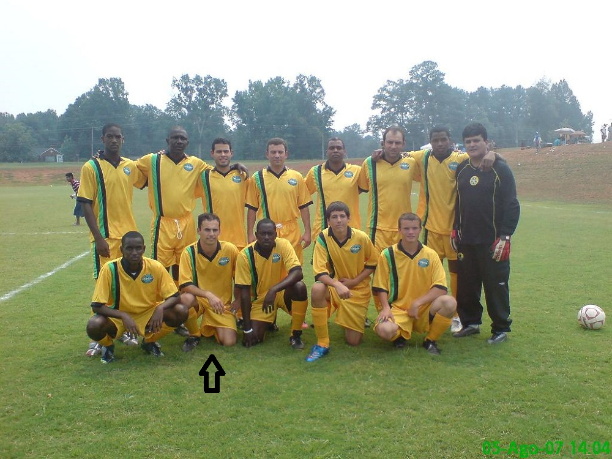
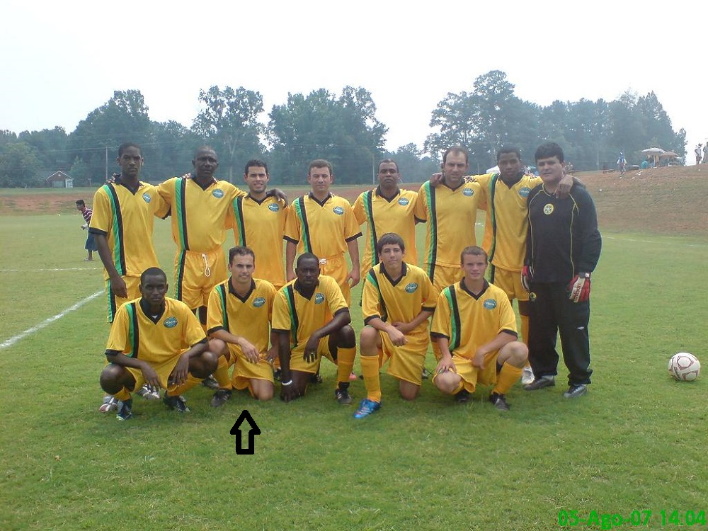
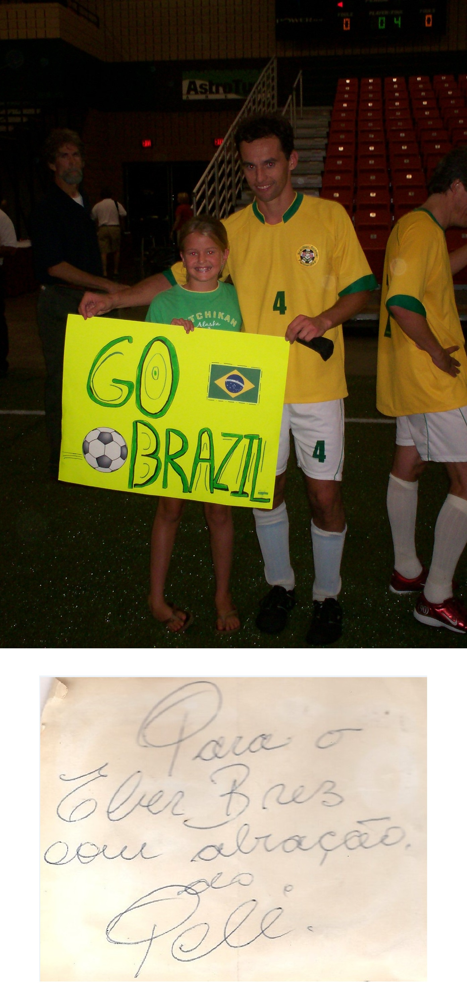
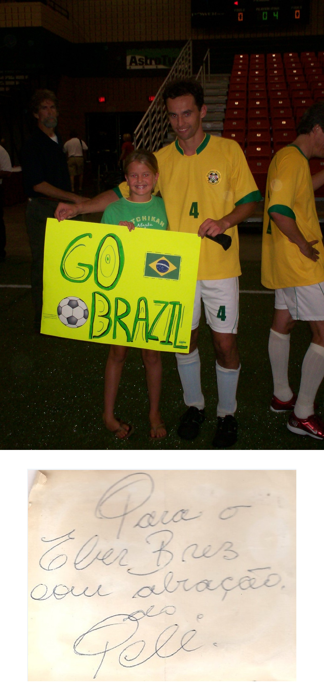
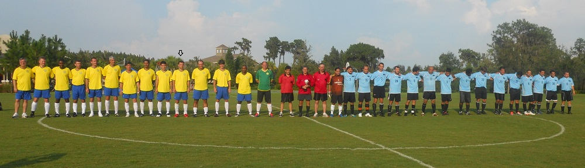
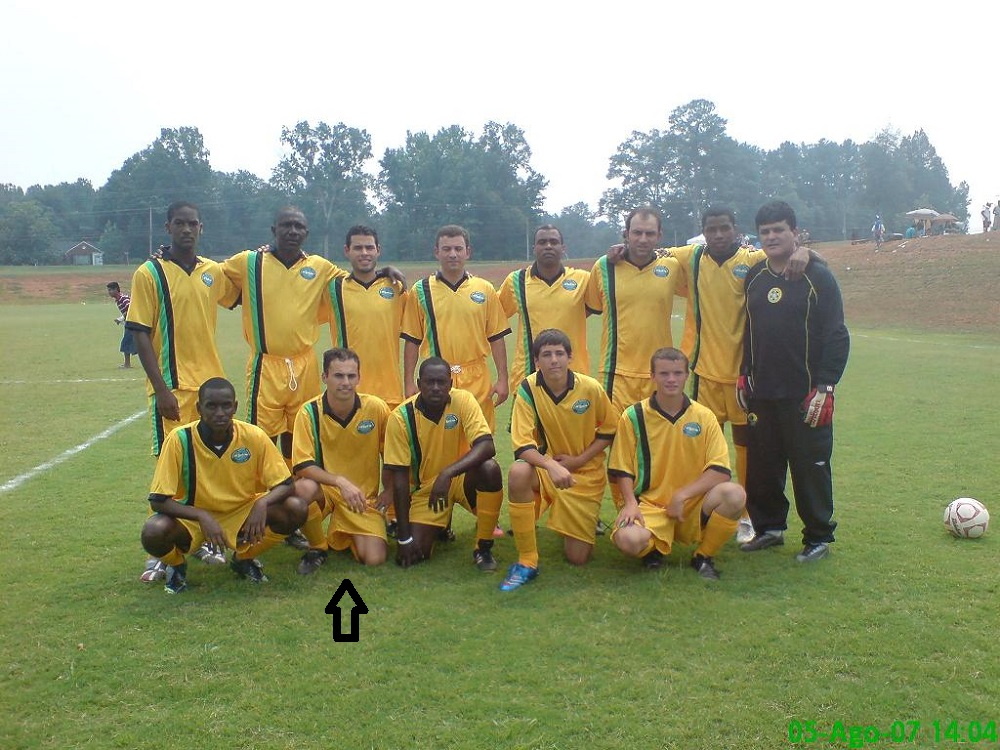
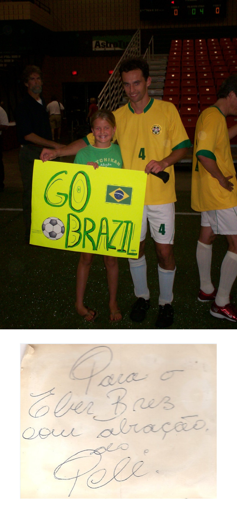

 


O futebol foi inventado pelos ingleses no final do século XIX. No princípio os jogos não tinham regras estabelecidas e por isso era muito violento. As primeiras regras no futebol foram criadas pelo Colégio Harrow em 1830 (The Football Rulles) quando estabeleceram o número de 11 jogadores para cada equipe e os gols para onde a bola deveria ser conduzida. Outras escolas praticavam também, mas com regras diferentes. Então, em 1848, os diretores de várias escolas se reuniram para unificar essas regras, o que ampliou a aceitação da atividade nos meios educacionais e nas classes mais altas.
Ao longo das décadas, novas regras foram implementadas e muitas outras modificadas até o futebol chegar ao formato que é conhecido hoje.
O futebol chegou ao Brasil no final do século XIX através do jovem inglês Charles Miller. O futebol cresceu tanto em adeptos que é hoje o esporte mais praticado no Mundo
Willian Borges da Silva nasceu em 09/08/1988 na cidade de Ribeirão Pires-SP onde, com apenas 6 anos, começou a jogar futsal no clube de sua cidade. Aos 10 anos, Willian é avaliado e aprovado para a iniciar nas categorias de base do Corinthians. Em 2005, com 16 anos, participou da Copa São Paulo de Futebol Júnior vencendo o campeonato pelo clube e, no ano seguinte iniciou sua carreira profissional no time principal. Um ano depois (2007), pelas boas atuações na seleção brasileira Sub-20, foi vendido para o Shakhtar Donetsk, da Ucrânia, em uma das maiores negociações já realizada pelo Corinthians. Após 5 anos foi para o Anzhi Makhachkala da Rússia, num contrato de 35 milhões de Euros e em 25/08/2013 o camisa 10 é contratado pelo time inglês Chelsea. Jogou 7 anos, período em que colecionou diversos títulos. Sendo convocado pela seleção brasileira de 2011 a 2019, jogou 2 copas do mundo, 2014 e 2018.
No meu tempo livre, eu gosto de ver um filme, um documentário, gosto ler, de "arranhar" um pouco no violão, gosto de passear de moto, de viajar, acampar, de pedalar e principlamente praticar esportes. O esporte que mais gosto é o Futebol. Quando eu era pequeno vivia jogando bola num campinho de terra. Aos 12 anos fui convidado, por um olheiro, para jogar nas categorias de base do Corinthians. Porém meu pai não deixou, alegando que poderia atrapalhar meus estudos.
Através de bolsa de estudos, estudei engenharia, e como eu era boleiro jogava, pela faculdade, os torneios da Federação Paulista Universitária, até me formar.
Ao conhecer alguns ex-jogadores do grupo Atletas de Cristo, tive também oportunidade de ensinar a modalidade e jogar alguns amistosos nos EUA (vide fotos).

